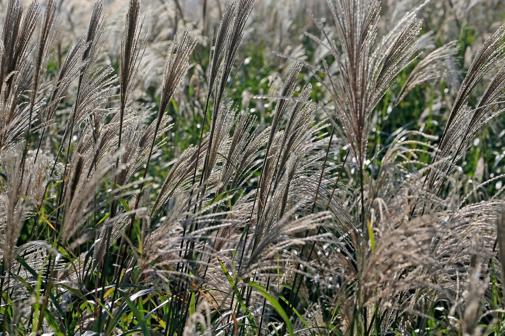
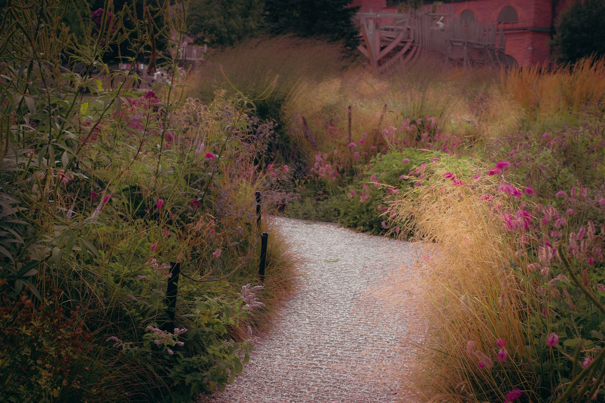

Maak ruimte
voor buiten.
Een tuin is meer dan wat er achter het huis ligt. Het is de plek voor de eerste koffie, een lange avond en alles daartussen.
Ontdek onze tuinen
Een goed ontwerp
voel je elke dag.
Je merkt het aan een pad dat logisch ligt. Aan een fijne plek in de avondzon. Aan planten die door het jaar heen steeds iets anders laten zien.
Bij mos brengen we de indeling, materialen en beplanting bij elkaar. Vanaf je eerste ideeën tot het moment waarop je buiten gaat zitten.
Zo pakken we het aanEen eigen plek.
Een eigen karakter.
Drie richtingen voor een tuin. Bekijk wat licht, ruimte en beplanting kunnen doen.

Door de border
Een licht pad tussen hoge grassen en bloeiende vaste planten.
Van een eerste idee
naar een tuin die klopt.
Een ontwerp krijgt pas waarde als het past bij de plek en bij de mensen die er straks gebruik van maken.
We kijken verder dan je verlanglijst.
Waar valt de zon? Wat wil je zien vanuit de woonkamer? Hoeveel tijd wil je in onderhoud steken? Met die vragen begint het plan.
We maken de mogelijkheden zichtbaar.
Een heldere indeling, materialen en een beplantingsplan maken het ontwerp concreet. Zo kun je keuzes maken voordat de schop de grond in gaat.
Het plan wordt een plek.
Van het grondwerk tot de laatste plant: we houden de onderdelen bij elkaar. Ook de aansluiting op het huis en het onderhoud krijgen aandacht.
Een tuin is
nooit af.
Planten groeien, het licht verandert en ieder seizoen brengt iets nieuws. Daarom ontwerpen we niet alleen voor de eerste zomer.
Vertel over jouw tuinWat heb jij
voor ogen?
Een complete tuin, een andere indeling of meer leven in de beplanting. Vertel kort over de plek en je plannen.